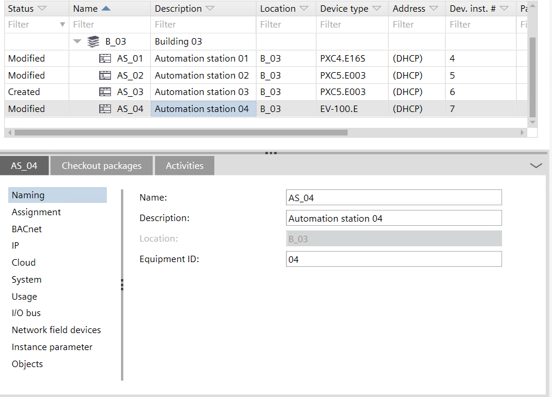
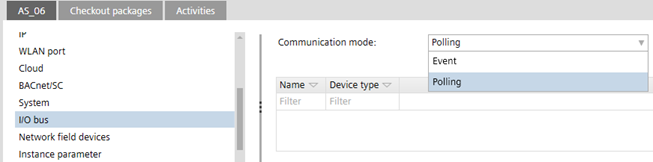
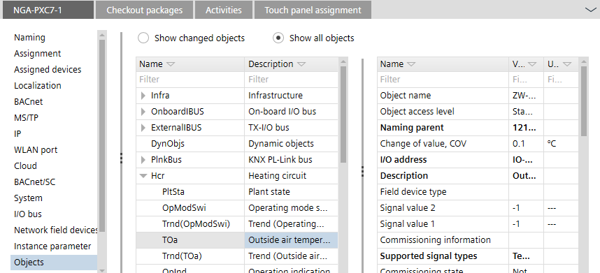
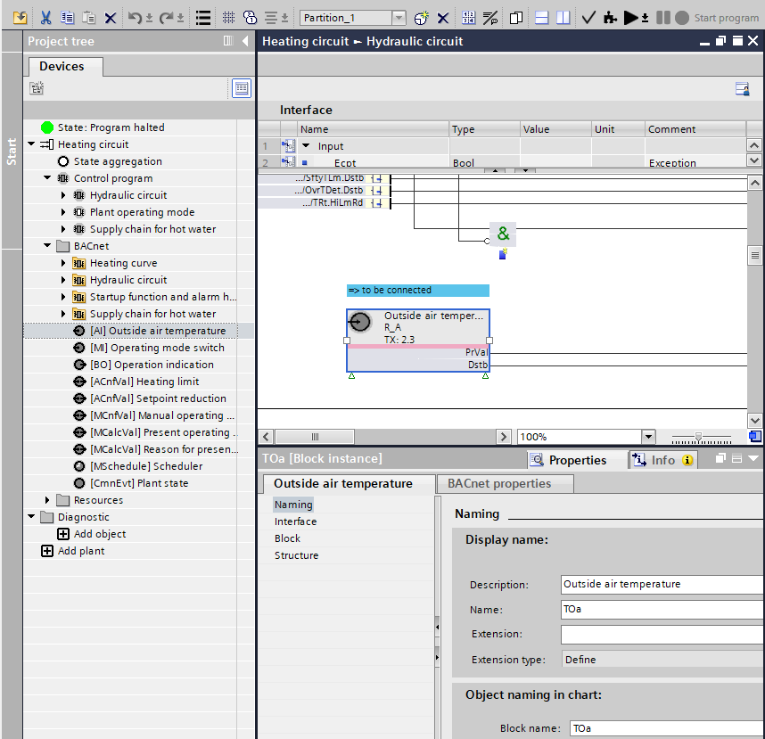

Details pane of the device version ≤ 1.5
The device Details pane has the following tabs:
- Details
- Check out packages
- Activities
- Touch panel assignment

Details tab > Naming
You can define the default device name prefix, and the device description in Settings > Address defaults > BACnet.
Address defaults
Setting | Description |
|---|---|
Name | Name of the device. |
Description | Description of the device. |
Location | Location information of the device. The location information is composed of the parent building element names, e.g. B_1'Flr_2. |
Equipment ID | Equipment designation of the device housing. |
Details tab > Assignment
Shows a list of operating and monitoring devices, and devices with web interface where the device is used.
Details tab > Assigned devices
Shows a list of automation stations which are assigned to the operating and monitoring device or device with web interface. Values in the target family column can be ABT devices, XWP devices, and Assigned online.
Details tab > Localization
Setting | Description |
|---|---|
Engineering unit | Shows the used engineering unit. |
Active language | Defines the active language. |
Runtime languages | Defines the language during runtime. |
Details tab > Browser port
Used to configure touch panel settings. Contains a direct link to the Engineering component, and a list where you can add and delete favorites.
Touch panels offer a browser functionality. You can define browser favorites to internal sites e.g. to view weather station information.
Engineering

To add a favorite to the list, click Add favorite. The URL must be entered in the format http://... or https://... for example https://www.siemens.com.
Setting | Description |
|---|---|
URL | URL of referenced Desigo Control Point device. Note: Clicking Go to engineering opens the to local engineering of the referenced Desigo Control Point device (only for fixed IP addresses). |
Orientation | Screen orientation of the touch panel. |
Keyboard layout | Keyboard language setting of the touch panel. |
Screensaver | Screensaver setting of the touch panel. |
Screensaver timeout | Idle time before the screen saver is activated. |
| If selected, the user is not logged out automatically when closing the browser. Default: disabled. |
Brightness | Screen brightness. Values: 0 to 100%. Default: 50% |
Brightness mode | You can set the brightness to be automatically adjusted. |
| If selected, VNC (virtual network computing) is enabled. Default: disabled. Note |
 Keep user logged in
Keep user logged in
Details tab > BACnet
You can define the default BACnet settings in Settings > Address defaults > BACnet.
Address defaults
Manually entering or changing device instance number values and device instance number ranges can result in duplicate device instance numbers, when application templates or ABT Pro projects have already been created. Make sure that the entered values are accurate.
You can check for duplicate device instance numbers in Building > Device list.
Checking for duplicate device properties
Setting | Description |
|---|---|
Object name | Name of the device. |
Device instance number | Device serial number (device instance number) that is associated with the BACnet Device. |
APDU retries | Specifies the number of retries when an APDU (Application Protocol Data Unit) transmission fails. |
APDU segment timeout | Specifies the timeout value in milliseconds from 1000 to 10000, when the APDU is sent in multiple segments. |
APDU timeout | Specifies the timeout value in milliseconds from 1000 to 10000, when the APDU can be sent in one transmission |
Max. APDU length | Specifies the maximum length of the APDU for network devices in Bytes. The following values are available:
|
Object structure on BACnet | Object hierarchy defined for the device that can be changed.
This object hierarchy defines the project listed in the project settings. Building > Settings > Device defaults. |

Details tab > MS/TP (Routing)
ABT Site supports MS/TP routing. You can configure the MS/TP manager port properties here. When enabling the COM port, ABT Site uses the default MS/TP values configured in Settings > Address defaults > MS/TP.
Address defaults
When enabling MS/TP routing you need to configure a valid network number in the IP area of the device (Details tab > IP > Network number).
Setting | Description |
|---|---|
|
MS/TP | Select a COM port to enable MS/TP routing. The list only shows available COM ports. If a COM port is used by the Modbus interface, the used port will not appear in the list. |
Baud rate | Specifies the rate at which data is sent to the bus. |
Network number | Number that identifies the network. |
Auto addressing | When enabled, the MAC address settings are obtained automatically. |
MAC Address | MAC address of the device. |
Max. manager address | Set the Max manager address to prevent the passing of the token to unused MAC addresses situated after the manager. |
Max. info frames | The maximum number of information requests to other devices. |
Enable large frames | Extends the frame length in MS/TP trunk of router. |
Details tab > MS/TP
You can define the default MS/TP settings in Settings > Address defaults > MS/TP.
Address defaults
Setting | Description |
|---|---|
Baud rate | Specifies the rate at which data is sent to the bus. |
Network number | Number that identifies the network. |
Auto addressing | When activated, the MAC address settings are obtained automatically. |
MAC Address | MAC address of the device. |
Max. manager address | Set the Max manager address to prevent the passing of the token to unused MAC addresses situated after the manager. |
Max. info frames | The maximum number of information requests to other devices. Range 1‑25. Default is 10. |
Enable large frames | Extends the frame length in MS/TP trunk of router. |
''Enable large frames" checkbox is applicable in MS/TP property of PXC5, PXC7, PXC4.M & DXR2.M devices only.
Details tab > IP
You can define the default IP settings in Settings > Address defaults > IP.
Address defaults
Setting | Description |
|---|---|
Ethernet Port state | Shows the current port state of the device. To get the information visible, an upload of the device configuration must be performed. PXC7 PXC5 and PXC4E DXR2 app type and PXC3 DXR2 from ABT Pro (including MS/TP types) |
Hostname | Dedicated hostname for the device. |
UDP Port | Specifies the UDP port in hexadecimal format from BAC0 to BAD4. |
Web access | Determines the HTTP connection setting of the web interface port. HTTP uses port 80. HTTPS uses port 443.
|
| If selected, DHCP (Dynamic Host Configuration Protocol) is used to automatically configure the device port. Clear the check box to manually enter the IP address values. |
| IP address of the device. |
| Specifies the subnet within the larger network. |
| Specifies a node on a TCP/IP network that serves as an access point to another network. |
| The address of the preferred domain name server. |
| The address of the alternative domain name server. |
| Name of the domain, for example, siemens.net. |
Network number | Number that identifies the network. |
| BACnet routing allows routing between BACnet/SC and BACnet/IP. It should be on only on hubs basically. |
Web certificate Certificate authority | When creating the automation station, the entry is taken from Settings > Address defaults > IP. Specify the certification authority:
|
| Shows the valid date for the assigned certificate. A Renew certificate information appears, if the date expires. |
Local broadcast UDP port | UDP port for local broadcast setting (Default 0xBB02 = 47874). Local broadcast UDP is used for messages that do not need to be routed by BBMD, for example, for grouping commands. |

Details tab > WLAN port
ABT Site allows for wireless connections to devices which have built-in wireless access points.
There is a WLAN time-out on the device. After 15 minutes idle time the wireless access point of the device shuts off. To manually re-enable the WLAN on the device, press the service button.
Make sure to change the default wireless password of the device (usually the serial number) during engineering. Any change of the device settings requires a full load of the device. Alternatively, you can activate the settings in web interface after the usage of play/pause function for delta downloads.
Configure and download
Using play/pause function
When you create a device, these default project settings are used. Modifications on the project settings at a later stage do not affect already existing devices. You can set the WLAN settings for each device separately. To change the default project settings, go to Settings > Address defaults > WLAN.
Address defaults
Property | Description |
|---|---|
| Select to enable the WLAN port via the out-of-service BACnet property. |
SSID | Enter the SSID used by the WLAN port of the device. Max. 32 characters. Or, click Set to factory settings to fetch the value from the device factory settings. |
Password | Enter the password, used by the WLAN port of the device. Max. 63 characters. To set the password to factory settings, chose Device default from SSID options list and confirm with Set to factory settings. To view the default factory settings, scan the QR code on the device. QR code information: WIFI:S:PXC4.E16_0000550;T:WPA;P:1400052738;; Determine manually: Use the information from the Date/Series/SN block: |
Channel | Set the channel, used by the WLAN port of the device. |
Details tab > Cloud
Configure the settings for cloud connectivity of your devices. When enabling the cloud port, ABT Site uses the default cloud values configured in Settings > Address defaults > Cloud.
Property | Description |
|---|---|
| Select to enable the cloud port via the enable-connectivity BACnet property. If enabled, the device will connect automatically if internet is available. Note: The cloud gateway application must be run to get a proper connection. |
| Select to disable the BACnet tunneling via enable-BACnet-tunnel BACnet property. It is used for the ABT Site remote engineering. Opens the connectivity between the device, cloud and ABT Site. Verify the connection with the web interface Object view > Device > Infrastructure > Network port for cloud. |
Reconnect delay | Set the reconnect delay time in seconds. |
Retry attempts | Set the number of retry attempts for the cloud object if connection is lost. |
Network number | Read-only. BACnet property which indicates the BACnet network number. |
Registration URI | Read-only. BACnet property which includes the cloud registration URI the cloud agent uses to register the device in the cloud. https://bootstrap.connectivity.siemens.com |
Activation key | The key is visible after the first read-back. Use the Copy to clipboard button to copy the Activation key and paste it in the Devices application. For more information on how to manage sites and devices in the cloud, please refer to the Devices User Guide (A6V12060067). https://www.siemens.com/download?A6V12060067 For more information to onboarding the automation stations, please refer to the Desigo Engineering Tool Access documentation (A6V12096474). |
Details tab > BACnet/SC
When setting the BACnet/SC node or hub in the device details, the default UDP port and IP network number are applied to the device. You can set the default UDP port and IP network number for BACnet/SC nodes and hubs in Settings > Address defaults > BACnet/SC.
Address defaults
Setting | Description |
|---|---|
BACnet/SC | Defines the function of the device within the BACnet/SC network. Disabled Node Hub Failover hub |
Disable BACnet/IP |
|
SC network number | Assignment of a BACnet/SC network number in the private network or in another network over internet. |
Primary hub | For devices defined as a node: assignment of the device to a primary hub. |
Failover hub | For devices defined as a node: assignment of the device to a failover hub (optional). |
Connect timeout
| Shows the time [s] until the node receives a confirmation message when connecting to a BACnet/SC network. |
Disconnect timeout | Shows the time [s] until the node receives a confirmation message when disconnecting to a BACnet/SC network. |
Min. reconnect timeout | Min. time [s] before reconnect after closing or losing a connection to a BACnet/SC hub. |
Initiating heartbeat timeout | Max. time [s] before a heartbeat request message is triggered by the node, when there are no messages in the connection to the BACnet/SC hub. |
Number of accepted hub connections | Max. number of accepted hub connections from other BACnet/SC nodes. |
Hub listener port (TCP) | TCP port of the web socket that the server is using for the BACnet/SC hub function. |
Reverse proxy | Function not yet supported |
TLS mode | Indicates how the TLS protocol version is selected for incoming hub connections. Currently supported TLS protocol versions are 1.2, 1.3 or flexible (nodes will be connected depending on their preference between 1.2 and 1.3, applicable for 3rd party integration). |
Certificate authority | Internal: ABT Site is the authority for the device certificates. |
Certificate valid until: | Defines the time span [days] for a expiry warning of the device certificate. |
Details tab > System
Property | Description |
|---|---|
Device type | Device type designation e.g. PXM50.E. |
Serial number | Serial number of the device. |
Application template | Name of the application template the device is based on. |
Template version | Version of the application template the device is based on. |
Application type | Name of the application type the device is based on. |
Type version | Version of the application type the device is based on. |
Product version | Product version number. |
Application architecture | Software application architecture. |
Time zone | The used time zone of the device. The default time zone is the time zone used by your computer. You can set the time zone for the project in Settings > Localization. |
Details tab > Usage
The Usage page displays a table of rooms, central functions and segments where the automation station is used. The displayed data is read-only.
Column | Description |
|---|---|
Name | Name of the room, segment or central function. |
Location | Location information of the automation station. The location information is composed of the parent building element names, e.g. B_1'Flr_2. |
Description | Description of the room, segment or central function. |
Details tab > I/O bus

In the I/O bus page it is possible to choose between two Communication modes for PXC4, PXC5 and PXC7 devices.
Switching of the communication mode requires a full load again.
Communication modes for PXC4, PXC5 and PXC7
- Event mode: Supports up to 8 TX-I/O modules. Only modules with revision D or higher are supported. Event mode is for special fast applications, for example, cooling machines, lighting, and so on.
- Polling mode (default): Supports up to 64 TX-I/O modules. Only modules with revision B or C or higher are supported. Polling mode is sufficient for typically HVAC applications.
Column | Description |
|---|---|
Name | Name of the I/O bus. |
Type | Type of the I/O bus, also listing the used module and channel of the I/O address, e.g. 1.2 stands for digital input D2. |
Details tab > Network field devices
Column | Description |
|---|---|
Name | Name of the device. |
Type | Type of the device. |
Serial number | Serial number of the device. |
Device Info | Read-only. Firmware version of the device. Note |
Details tab > Instance parameter

The Instance parameter page displays the default values of the device as configured in Configuration > Default values.
Default values
The parameter values can be edited. Edited values are emphasized in bold font. Right-click a value and select Reset value to template to overwrite the current value with the value defined in the parent application template.
Only properties based on application templates can be reset to template. Objects and properties for routers and gateways are defined in meta data, not in the application configuration.
Column | Description |
|---|---|
Description | Description of the object. |
Property | Description of the parameter. |
Value | Description of the room, segment or central function. |
Unit | Unit of the parameter. |
Object | Designation of the object type. |
You can only view and change parameter values in ABT Site if the Avail. on AS check box for the selected parameter is selected. The Avail. on AS check box is set in Configuration > Default values.
Configuring default values (template)
If selected, the corresponding object parameters are available in the following areas:
- Device details > Instance parameter page
- Application template details > Instance parameter tab
- Building > Device list > Load instance parameter
- Checkout report
Details tab > Objects
List of all BACnet objects and their properties within a device. The list is built dynamically and depends on the selected device and the created control program structure. The properties on the right side are read-only.
All displayed objects are visible in Desigo CC > System Browser > Management View.
Shows the outside air temperature in the details pane.

Shows the outside air temperature within the chart.

| Shows only objects that have been changed compared to the corresponding room application template or automation program. |
Show all objects | Shows all objects of the device. |
 Show changed objects
Show changed objectsFor more information on BACnet object properties, see the BACnet object topics.
BACnet objects (Programming)
Details tab > Time sync
You can allow a device to synchronize time with other devices that require time.
Setting | Description |
|---|---|
Time zone | The used time zone of the device. The default time zone is the time zone used by your computer. You can set the time zone for the project in Settings > Localization. |
UTC offset | Read-only. The difference in time between UTC time and a location's observed time. |
Time sync window | After a power failure, the device waits for a time synchronization message. Time sync window is the time span before a time synchronization message is sent to the device after a power failure. The property is only valid if there is no correct date and time available after a power failure. |
NTP address | When specified, the device reads time from the indicated NTP server and ignores BACnet time synchronization. The device requests the time from the NTP server every 12 hours, after a restart of the device, and when the NTP address is changed. |
| Activate to allow time synchronization with other devices that require time. Every synchronized device must have only 1 time manager. When Time manager extension is enabled, a default entry (Local broadcast) is added to the UTC time synchronization recipient list below and the |
Time sync interval | Specifies the time periods between synchronization events. Default: 150 minutes. Synchronization also occurs when the manager time has changed. When set to zero, time synchronization is disabled. |
| Activate to enable clock-aligned periodic synchronization. When disabled, intervals start with last time change. |
Interval offset | When Align intervals is enabled and the intervals exactly fit into 24 hours, this setting specifies how many minutes after the calculated time the synchronization shall occur. |
| Activate if there are devices which do not support UTC time synchronization. If activated also local time synchronization is used. |

UTC time synchronization recipient list
You can add devices and networks to the UTC time synchronization recipient list. The list contains devices to be synchronized. It is a one column table containing a device instance number or the network number.
Column | Description |
|---|---|
Device/Address | Device instance number or the network number. |
Command | Description |
|---|---|
Add network | Opens a window where you can add a network number and enable local broadcast. |
Add device | Opens a window where you can enter the device instance number of the device directly. |
Delete | Removes the selected device from the UTC time synchronization recipient list. |
Details tab > Supervision
A supervisor is one or more dedicated device(s) in a site which checks the reachability of BACnet devices (life-check). If a device cannot be reached during the life-check, a message is sent to a recipient.
The table of supervised devices contains the device instance number and the device name. The name is not available for 3rd party devices. Siemens legacy devices such as Desigo Xworks are also considered as 3rd party devices.
When you add a device to the supervised devices table, an icon  is added next to the supervisory device.
is added next to the supervisory device.
A device that is defined as a supervisor device can be monitored by another supervisor device. This means that all devices in a building can be monitored with the life-check.
Command | Description |
|---|---|
Add from project | Opens a window where you can select a device from the project's building structure. |
Add | Opens a window where you can enter the device instance number of the device directly. |
Delete | Removes the selected device from the supervised devices table |
Delete all | Removes all devices from the supervised devices table. |
Details tab > BBMD
If your BACnet devices are interconnected via IP routers broadcast messages will be blocked by the IP router. The main purpose of BBMDs is to redistribute the broadcast messages that BACnet requires for discovery.
ABT Site supports the use of BACnet/IP Broadcast Management Devices (BBMD).
Setting | Description |
|---|---|
| Select to enable the device as a BBMD device. When enabled, it is indicated next to the device in the Building structure table. |
| Allows a device to register with a BBMD, join a BACnet/IP network, and send its broadcast messages to the BBMD. |
Broadcast distribution table (BDT)
Column | Description |
|---|---|
IP address | IP address of the device. |
UDP port | Drop-down list. Specifies the UDP port in hexadecimal format from BAC0 to BAD4. Default is BAC0. |
Mask | Broadcast distribution mask. Default is 255.255.255.255. Indicates how broadcast messages are to be distributed on the IP subnet. |
BBMD reference | BACnet reference name of the device. The name corresponds to the project name of the device. Not available for 3rd party devices. |
Command | Description |
|---|---|
Add | Opens a window where you can add a device by entering IP address, mask and UDP. |
Delete | Removes the selected device from the Broadcast distribution table (BDT). |
Copy table | Copies the table content. |
Paste table | Pastes the table content. |
Details tab > Substitution strings
List of substitution strings (read-only) and the corresponding replacement strings. Default values are marked in italics. Changed values are marked in bold.
Checkout packages tab
Check-out packages are displayed for building elements, areas, and devices. Check-out packages indicate the corresponding project paths that have to be writable. This allows the identification of the directories to be checked in or out from a project repository in a distributed engineering environment with Branch Office Server (BOS).
Only the top folders are listed because only the top folders have to be checked out.
Column | Description |
|---|---|
Folder | Relative path to the folders where the application templates stations are saved. |
Description | Name of the application template. |
Type | Type of project or template, e.g. application template or ABT Pro project. |
Activities tab
Lists actions performed on devices in a table.
Column | Description |
|---|---|
Activity | State of the activity. The activity states correspond to the content of the Status column of the building structure table. |
Date | The date and time when the activity was performed. |
Comment | Comment as entered in the Comment field e.g. of the Pack & Go file. |
User | The user who started the activity. |
Computer | The name of the computer which performed the activity. |
Touch panel assignment tab
Lists available touch panels with detailed information. Allows you to assign a touch panel to an operating and monitoring device such as PXG3.W100.
Column | Description |
|---|---|
| Select the check box to assign the touch panel to the operating and monitoring device. |
Name | Name of the touch panel. |
Description | Description of the touch panel. |
Address | IP address of the touch panel. |